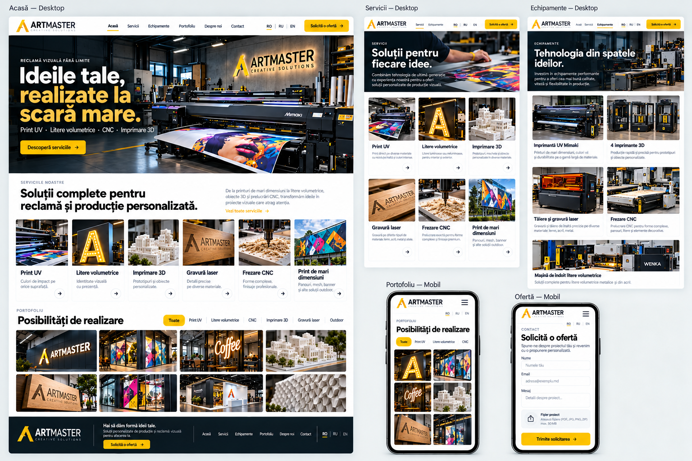
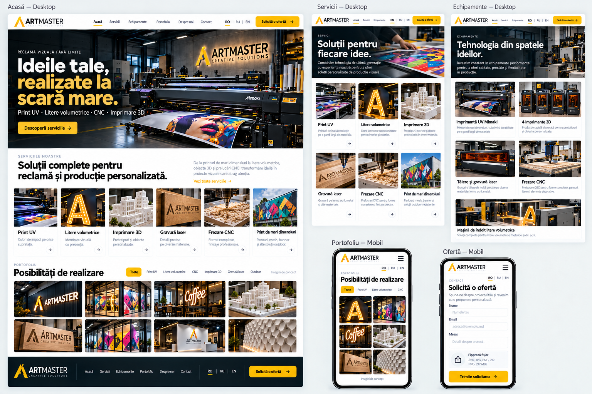

ARTMASTER — cele două machete
Română (principală) · Rusă · Engleză. Vizualizări de design pentru desktop și mobil.
Acest fișier funcționează fără internet. Apasă pe o imagine pentru a o deschide la dimensiunea originală.
Varianta 1

Varianta 2
